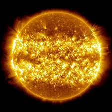
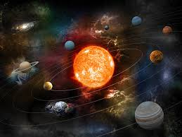

The Solar System is a fascinating collection of celestial bodies that includes the Sun, eight planets, their moons, and various other objects such as asteroids and comets. Each planet has its unique characteristics and holds secrets that have captivated astronomers for centuries. From the scorching heat of the Sun, where nuclear fusion powers our solar system, to the icy realms of distant Pluto, the diversity within our cosmic neighborhood is awe-inspiring.
As we delve into the exploration of the Solar System, we uncover not only the physical attributes of each celestial body but also the rich history of human space exploration. From the first manned moon landing to the robotic probes venturing into the far reaches of space, our curiosity knows no bounds. This assignment aims to provide a glimpse into the vastness of our cosmic home, encouraging a sense of wonder and appreciation for the mysteries that continue to unfold beyond our Earthly borders.
 | Planet | Distance from the Sun |
|---|---|
| Mercury | 57.9 million km |
| Venus | 108.2 million km |
| Earth | 149.6 million km |